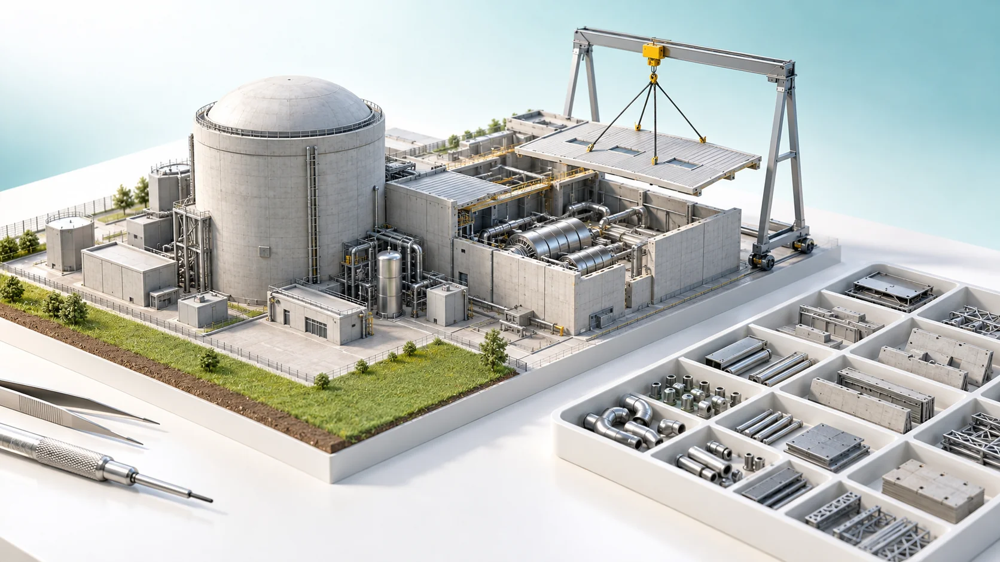
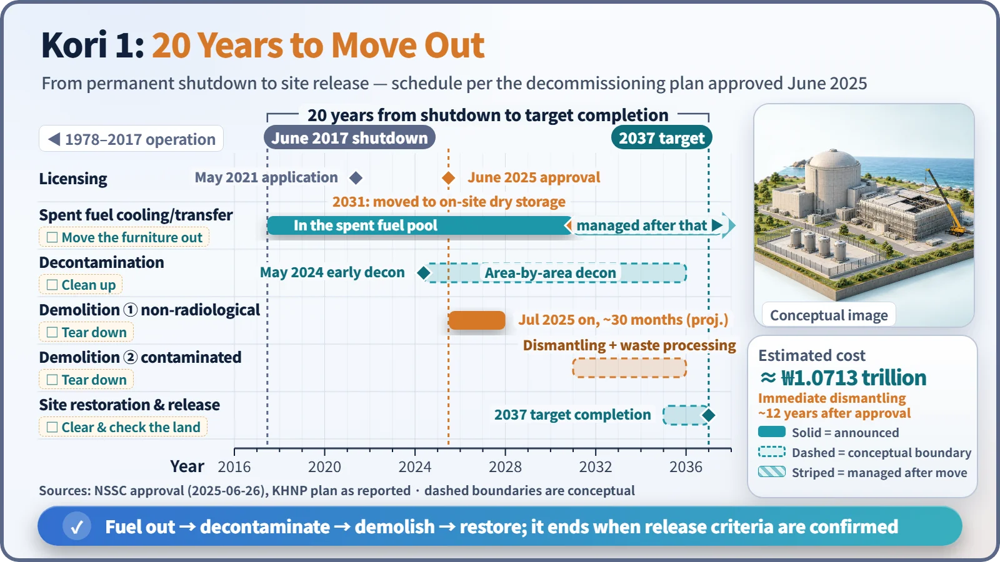
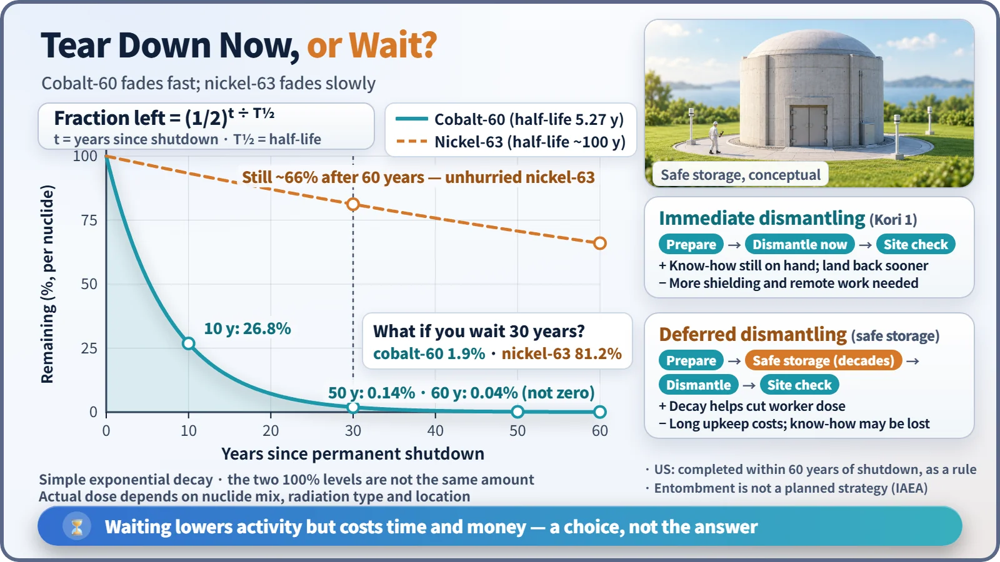

Society, Environment & the Future · 293
Handing Back the Empty Lot After Moving Out — How Nuclear Plant Decommissioning Really Ends
Shutdown is the starting line. Like moving out of a long-time home, the plant is emptied, cleaned and torn down, and it ends only when the land is released from regulatory control.

Permanent shutdown is the starting line, not the finish. Decommissioning removes the fuel, decontaminates and dismantles the plant, and ends only when the regulator confirms the site meets release criteria. South Korea's Kori Unit 1 shut down in 2017 and aims to finish in 2037. [1]
The day the switch goes off
On the night of June 18, 2017, Kori Unit 1 in Gijang, Busan, shut down. South Korea's first nuclear power plant, generating electricity since 1978, entered permanent shutdown after nearly 40 years. The headlines read: "Kori 1 passes into history."
Did the plant end that day? Not at all. Only in June 2025, eight years later, did the Nuclear Safety and Security Commission approve its decommissioning plan, and if everything goes to plan the work will finish in 2037: 20 years from the day it stopped. [2]
Nuclear plant decommissioning is the whole process of removing the fuel from a permanently shut-down plant, cleaning and cutting away contaminated equipment, and confirming that the land left behind meets regulatory criteria, until the site is released from regulatory control. The IAEA defines it as "the administrative and technical actions taken to allow the removal of some or all of the regulatory controls from a facility." The end is not the day the buildings disappear, but the day the regulator confirms it no longer needs to oversee the site. [1]
The same order as moving out of a long-time home
Imagine tearing down a house you have lived in for 40 years and handing the land back. There is an order to it.
- First, the furniture goes out: removing the spent fuel. Used fuel keeps producing decay heat even after shutdown, so it first cools in a water-filled pool and is then moved on, for example to dry storage.
- Then you clean: decontamination. Radioactive material stuck inside pipes and equipment is stripped off with chemicals or machines, reducing worker dose and waste. Cleaning removes only surface contamination; steel that long neutron exposure has made radioactive itself ("activation") must be cut out and handled separately.
- Demolition: areas without radioactivity, such as the turbine building, come first; highly radioactive parts such as the reactor vessel are sometimes cut underwater with remote equipment.
- Clearing the land: site restoration and site release. Residual radioactivity is measured across the site and confirmed to be below the criteria. The US NRC requires the dose from leftover radioactivity to be no more than 0.25 mSv per year, compared with the roughly 3.0 mSv we each receive from nature every year. [3] [4]

On Kori 1's actual schedule, non-radiological areas are demolished first over about 30 months from July 2025. In 2031, the 485 spent fuel assemblies filling the pool move to an on-site dry storage facility; the contaminated areas are then dismantled in earnest, with site restoration targeted for completion in 2037. The fuel storage facility continues to be managed separately after that. The cost is estimated at about 1.0713 trillion won. [2]
Why does it take well over ten years?
A moving company finishes in a day. A nuclear plant is different. First, there has to be somewhere to take the furniture (the fuel). Second, work in radiation areas, such as remote cutting, must be slow and careful, with worker exposure calculated as you go. Third, the steel and concrete that are cut out must each be measured, sorted, packaged and shipped. Fourth, every stage comes with plan writing, public consultation and regulatory review. South Korea's Nuclear Safety Act requires an operator to apply for decommissioning approval within five years of permanent shutdown.
Some plants have already finished. Maine Yankee in the United States completed decommissioning in about eight years, from 1997 to 2005, but its spent fuel still sits in dry storage on the site. Without a final repository, the fuel store can remain even after the land has been cleared. [5]
Tear it down now, or wait?
The IAEA recognizes two decommissioning strategies. [1]
| Strategy | How it works | Trade-offs |
|---|---|---|
| Immediate dismantling (Kori 1) | Dismantling goes ahead without a decades-long wait; fuel management and some demolition may run in parallel. | Staff and records are still available and land returns early, but radioactivity is higher, so more shielding and remote equipment are needed. |
| Deferred dismantling | The facility is sealed and monitored for decades, then dismantled. The US requires completion within 60 years of shutdown. | Radioactivity decays meanwhile, but at the cost of decades of upkeep and a gap in skilled staff. |
What does waiting buy? Cobalt-60, created when cobalt in the reactor's steel absorbs neutrons, is one of the main sources of radiation exposure for decommissioning workers, and its half-life is 5.27 years.
Amount left = initial amount × (1/2)^(years elapsed ÷ 5.27)

About 27% is left after 10 years, about 1.9% after 30 years, and only 0.14% after 50 years, so the work gets that much easier. But nickel-63, with a half-life of around 100 years, still has about two-thirds left after 60 years. Rather than one strategy being right, it is a choice made to suit each country and site. "Entombment," pouring concrete over the plant and leaving it buried in place, is not recognized as a planned decommissioning strategy.
Why are demolition blasts so rare?
Decommissioning often brings to mind a building collapsing in a cloud of dust, but the real work is done before that. Maine Yankee's containment building was brought down with explosives only after decontamination was complete. The core of decommissioning is cleaning, cutting and measuring, and most of the resulting material has no radioactivity or very little.
Key takeaways
Decommissioning starts with permanent shutdown and ends with site release. The order is fuel removal, decontamination, demolition, then site restoration and release, just like moving out of a house. Kori 1 is using immediate dismantling and aims to finish in 2037: twenty years to carefully empty a house that kept the lights on for 40.